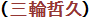

The values themselves in the following tables are not my creations although they have been computed by my programs. They are simply facts. Copying, reproducing, storing or transmitting these values in any form, electronic or mechanical, is welcome. Cheers!
Tetsuhisa Miwa
, PhD
Back to Miwa's home